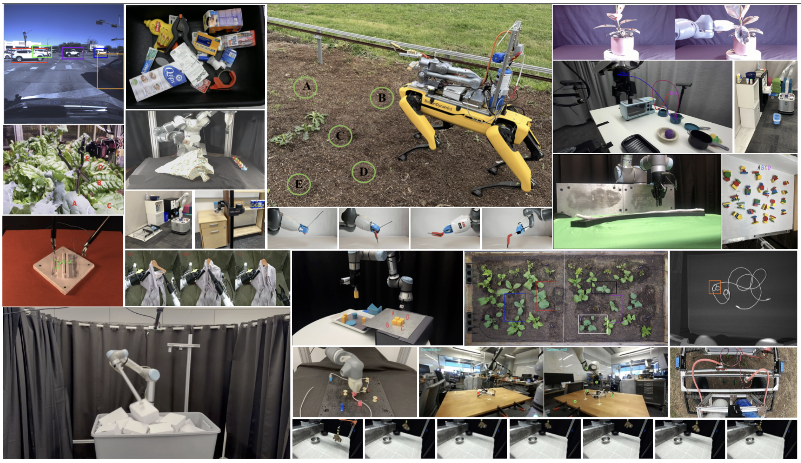
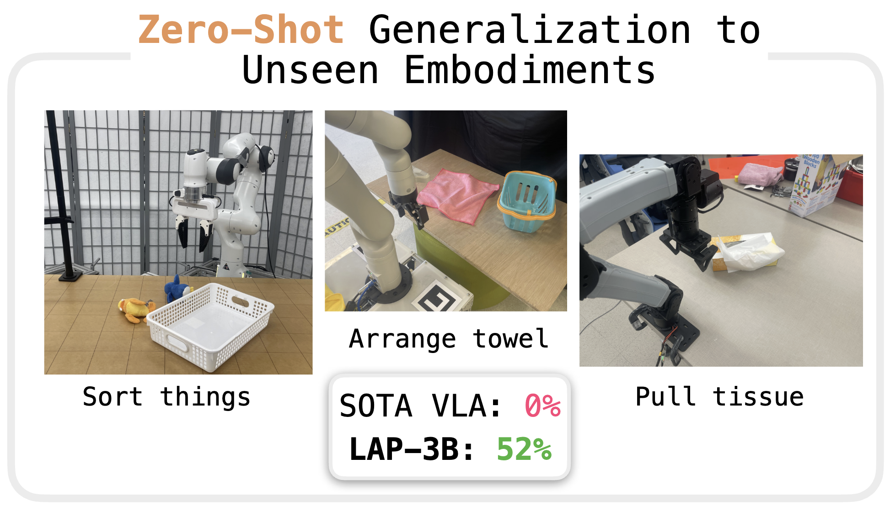

KinDER: A Physical Reasoning Benchmark for Robot Learning and Planning
Yixuan Huang*,
Bowen Li*,
Vaibhav Saxena*,
Utkarsh Aashu Mishra,
Yichao Liang,
Liang Ji,
Lihan Zha,
Jimmy Wu,
Nishanth Kumar,
Sebastian Schere,
Danfei Xu,
Tom Silver
Hierarchical DLO Routing with Reinforcement Learning and In-Context Vision-language Models
Mingen Li,
Houjian Yu,
Yixuan Huang,
Youngjin Hong,
Changhyun Choi

RoboVista: Evaluating Vision Language Models for Diverse Robot Applications
Shuangyu Xie,
Kaiyuan Chen,
Ziyang Chen,
Simeon Adebola,
Yixuan Huang,
Zehan Ma,
Tianshuang Qiu,
Wentao Yuan,
Dhruv Shah,
Pannag R Sanketi,
Ken Goldberg

LAP: Language-Action Pre-training Enables Zero-Shot Cross-Embodiment Transfer
Lihan Zha,
Asher James Hancock,
Mingtong Zhang,
Tenny Yin,
Yixuan Huang,
Dhruv Shah,
Allen Z. Ren,
Anirudha Majumdar
Fail2Progress: Learning from Real-World Robot Failures with Stein Variational Inference
Yixuan Huang,
Novella Alvina,
Mohanraj Devendran Shanthi,
Tucker Hermans
Points2Plans: From Point Clouds to Long-Horizon Plans with Composable Relational Dynamics
Yixuan Huang,
Christopher Agia,
Jimmy Wu,
Tucker Hermans,
Jeannette Bohg
Latent Space Planning for Multi-Object Manipulation with Environment-Aware Relational Classifiers
Yixuan Huang,
Nichols Crawford Taylor,
Adam Conkey,
Weiyu Liu,
Tucker Hermans
Out of Sight, Still in Mind: Reasoning and Planning about Unobserved Objects with Video Tracking Enabled Memory Models
Yixuan Huang,
Jialin Yuan,
Chanho Kim,
Pupul Pradhan,
Bryan Chen,
Li Fuxin,
Tucker Hermans
Planning for Multi-Object Manipulation with Graph Neural Network Relational Classifiers
Yixuan Huang,
Adam Conkey,
Tucker Hermans
Toward Learning Context-Dependent Tasks from Demonstration for Tendon-Driven Surgical Robots
Yixuan Huang,
Michael Bentley,
Tucker Hermans,
Alan Kuntz
|
{kind=link}